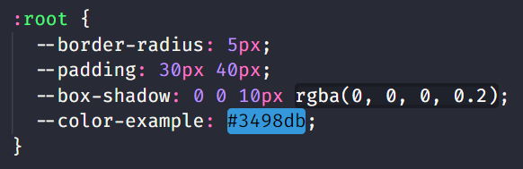
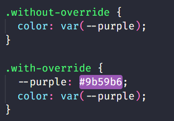

Explicando variáveis no CSS
Variáveis no CSS são valores nomeados reutilizáveis.
Definidas com "--", facilitam a consistência e manutenção do código, simplificando ajustes globais.

Exemplo de sobrescrita de variáveis:

Sobrescrever variável, basta redefinir o valor.
Sobrescrever variável, basta redefinir o valor.